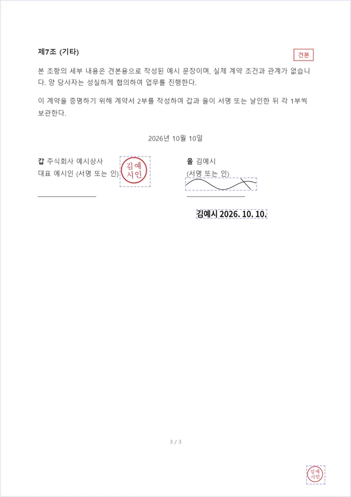
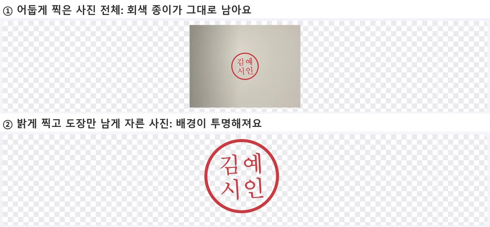

PDF 계약서에 프린트 없이 서명·도장 넣는 법
PDF 계약서나 동의서를 받았는데 '서명해서 보내 주세요'라는 말에 프린터부터 찾고 계셨죠? 이 글에서는 출력과 스캔 없이 PDF에 서명을 그려 넣고, 도장 사진을 깔끔하게 얹고, 이름과 날짜까지 넣는 방법을 직접 해 본 그대로 알려 드리고, 이렇게 넣은 서명이 무엇이고 무엇이 아닌지도 솔직하게 정리했어요.
먼저 알아 두세요: '서명 그림'과 전자계약은 달라요
시작하기 전에 꼭 짚고 갈 점이 있어요. 벤토툴 PDF 서명 넣기가 하는 일은 PDF 페이지 위에 서명이나 도장 그림을 얹는 거예요. 종이에 펜으로 서명한 뒤 스캔하는 것을 화면 안에서 대신 해 준다고 생각하면 가까워요. 인증서 같은 전자 인증 정보는 파일에 들어가지 않고, 누가 언제 서명했는지를 파일 스스로 증명해 주지도 않아요. 서명 그림은 PDF 안에 별도의 그림으로 들어가기 때문에, 받은 사람이 다른 프로그램으로 옮기거나 지우는 것도 기술적으로는 가능해요.
법에서 말하는 전자서명은 어떨까요? 국가법령정보센터에 올라온 「전자서명법」(법률 제18479호, 2022. 10. 20. 시행) 제2조는 전자서명을 '서명자의 신원'과 '서명자가 해당 전자문서에 서명하였다는 사실'을 나타내는 데 쓰려고 전자문서에 첨부되거나 논리적으로 결합된 전자적 형태의 정보라고 정의해요. 제3조는 전자서명이 전자적 형태라는 이유만으로 서명·서명날인·기명날인으로서의 효력이 부인되지 않는다고 하고, 법령이나 당사자 간 약정에 따라 전자서명을 선택한 경우에는 그 효력을 가진다고 정하고 있어요.
다만 PDF에 얹은 서명 그림 하나가 구체적인 상황에서 어떻게 평가되는지는 문서 종류, 당사자 사이의 약속, 분쟁 여부에 따라 달라질 수 있어서 이 글에서 단정하지 않을게요. 실무적으로는 이렇게 나눠 생각하면 편해요.
| 상황 | 어울리는 방법 |
|---|---|
| 상대가 "PDF에 서명해서 회신해 주세요"라고 한 동의서·확인서·신청서 | 서명 그림 넣기로 충분한 경우가 많아요. 받는 쪽이 정한 방식이니까요. |
| 금액이 크거나 분쟁 가능성이 있는 계약 | 본인 확인과 서명 기록을 남겨 주는 전자계약 서비스나 인증서 기반 전자서명을 상대와 합의해서 쓰세요. |
| 기관 제출 서류 | 기관 안내를 먼저 확인하세요. 원본 날인이나 특정 인증 방식을 요구하는 곳도 있어요. |
어느 쪽인지 애매하다면 보내기 전에 받는 사람에게 "PDF에 서명 이미지를 넣어서 보내도 될까요?"라고 한 줄 물어보는 게 가장 확실해요.
서명 넣기, 순서대로 따라 하기
- PDF 서명 넣기를 열고 서명할 PDF를 올리세요. 파일은 서버로 가지 않고 내 브라우저 안에서만 열려요.
- '① 서명 만들기'에서 방식을 고르세요. 직접 그리기, 서명·도장 이미지, 이름·날짜 글자 세 가지가 있어요.
- '페이지에 넣기'를 누르면 지금 보고 있는 쪽 가운데에 들어가요. 그래서 서명란이 마지막 쪽에 있다면 '다음' 버튼으로 그 쪽까지 먼저 넘긴 뒤 넣는 게 편해요.
- 넣은 서명을 끌어서 서명란으로 옮기고, 오른쪽 아래 동그라미를 끌어서 크기를 맞추세요. 잘못 넣었으면 ✕로 빼면 돼요.
- '서명한 PDF 저장'을 누르면 원래 파일 이름 뒤에 _signed가 붙은 PDF가 내려와요.
직접 만든 가짜 3쪽짜리 견본 계약서(54,122바이트)에 서명 그림, 도장, 이름·날짜를 넣고 저장해 보니 1초도 안 걸렸고, 결과 파일은 180,173바이트(약 176KB)였어요. 그림이 들어간 만큼 용량이 늘었지만 계약서 본문 글자는 그대로 남아 있어서, 저장한 PDF에서도 글자를 선택하고 검색할 수 있었어요.

서명을 깔끔하게 그리는 요령
휴대폰이라면 손가락으로, PC라면 마우스나 터치패드로 서명 칸에 그리면 돼요. 색은 검정·파랑·빨강, 굵기는 가늘게·보통·굵게 중에서 고를 수 있어요.
- 칸을 크게 쓰세요. 서명 칸 전체를 넉넉하게 써서 그린 뒤 페이지에서 줄이는 게, 작게 그린 걸 키우는 것보다 선이 매끈해요.
- 마우스보다 터치가 편해요. PC에서 마우스로 그리면 선이 떨리기 쉬워요. 같은 링크를 휴대폰에서 열어 손가락으로 그리면 훨씬 자연스러워요.
- 파란색도 고려해 보세요. 검정 글씨만 있는 문서에서 파란 서명은 인쇄된 글자와 구분이 잘 돼요.
- 한 번 만든 서명은 다시 쓸 수 있어요. 만든 서명은 '만든 서명' 줄에 모여서, 누르면 지금 보는 쪽에 하나 더 들어가요. 다만 페이지를 닫으면 사라지니 문서마다 새로 그려야 해요.
도장 사진을 깨끗하게 넣는 법
도장을 써야 한다면 흰 종이에 도장을 찍고 사진을 찍어서 올리면 돼요. '흰 배경 투명하게'가 켜져 있으면 흰색에 아주 가까운 부분이 투명해져서 도장만 찍힌 것처럼 보여요. 그런데 직접 해 보니 사진을 어떻게 찍느냐에 따라 결과가 크게 달랐어요.

- 밝은 곳에서 찍으세요. 종이가 회색이나 누런색으로 찍히면 '흰색'으로 인식되지 않아 배경이 통째로 남아요. 낮의 창가처럼 밝은 곳에서, 휴대폰 그림자가 종이에 지지 않게 비스듬히 찍으세요.
- 도장 둘레에 여유가 너무 많으면 잘라 주세요. '흰 배경 투명하게'를 켜면 종이 부분을 지우고 도장이 있는 곳만 남겨요. 밝게 찍은 1600×1200 사진과 가장자리가 어둡게 찍힌 사진 모두 도장 둘레(400×400)만 남았어요. 다만 종이에 다른 글씨나 얼룩이 함께 찍혔다면 그것까지 남을 수 있으니, 그럴 땐 이미지 자르기로 도장 둘레만 남게 자른 뒤 올리세요.
- 도장은 진하게, 한 번에. 인주를 충분히 묻혀 한 번에 꾹 찍어야 색이 고르게 나와요. 흐릿한 부분은 배경과 함께 옅어질 수 있어요.
- HEIC라면 먼저 바꾸세요. 이 칸은 PNG·JPG·WEBP를 받아요. 아이폰 사진이 HEIC라면 HEIC → JPG 변환으로 먼저 바꿔 주세요. 자세한 내용은 아이폰 사진(HEIC)이 PC에서 안 열릴 때에 있어요.
배경이 이미 투명한 PNG 도장 파일이 있다면 그게 가장 깔끔해요. 그대로 올리면 투명한 부분은 그대로 유지돼요.
이름·날짜 넣기와 여러 쪽에 넣기
'이름·날짜 글자'에서 이름을 적고 '오늘 날짜'를 누르면 '김예시 2026. 10. 10.'처럼 이름 뒤에 날짜가 붙어요. 넣은 글자는 PDF 안에 그림으로 들어가서, 받는 쪽 컴퓨터에 한글 글꼴이 없어도 깨지지 않아요. 대신 넣은 글자는 나중에 고칠 수 없으니, 틀렸다면 ✕로 빼고 다시 넣으세요.
쪽마다 도장이나 이니셜을 요구하는 문서도 있죠. 이럴 때는 하나를 원하는 자리에 놓고 눌러서 선택한 다음 '선택한 서명을 모든 쪽 같은 자리에'를 누르면 나머지 쪽 같은 위치에 한꺼번에 들어가요. 테스트에서 3쪽 계약서 오른쪽 아래에 작은 도장을 놓고 이 버튼을 눌렀더니 1~3쪽 모두 같은 자리에 들어갔어요. 쪽마다 내용 배치가 다르면 글자를 가릴 수 있으니, 저장 전에 '이전'·'다음'으로 한 쪽씩 확인하세요. 참고로 이 기능은 같은 자리에 같은 그림을 넣는 것이라, 종이 두 장에 걸쳐 찍는 간인과는 달라요.
보내기 전에 확인할 것
- 저장한 파일을 다시 열어 보세요. 서명이 서명란에 잘 들어갔는지, 글자를 가리지 않았는지 PDF 뷰어로 한 번 확인하세요.
- 원본도 남겨 두세요. 서명 전 원본이 있어야 실수했을 때 처음부터 다시 할 수 있어요.
- 암호 걸린 PDF는 안 열려요. 열람 암호가 걸린 PDF는 이 도구에서 열 수 없어요. 보낸 쪽에 암호 없는 파일을 요청하세요.
- 보낼 때도 조심하세요. 서명 이미지는 다른 문서에 옮겨 붙일 수 있어요. 서명한 PDF는 필요한 사람에게만 보내고, 서명 이미지 파일을 여기저기 올려 두지 마세요.
서명할 쪽 순서가 뒤죽박죽이거나 누운 쪽이 있다면 먼저 PDF 페이지 순서 바꾸기·삭제·회전으로 정리하고 서명하면 편해요.
참고한 자료
글에서 소개한 도구, 회원가입 없이 바로 써 보세요.
✍️ PDF 서명 넣기 바로 쓰기